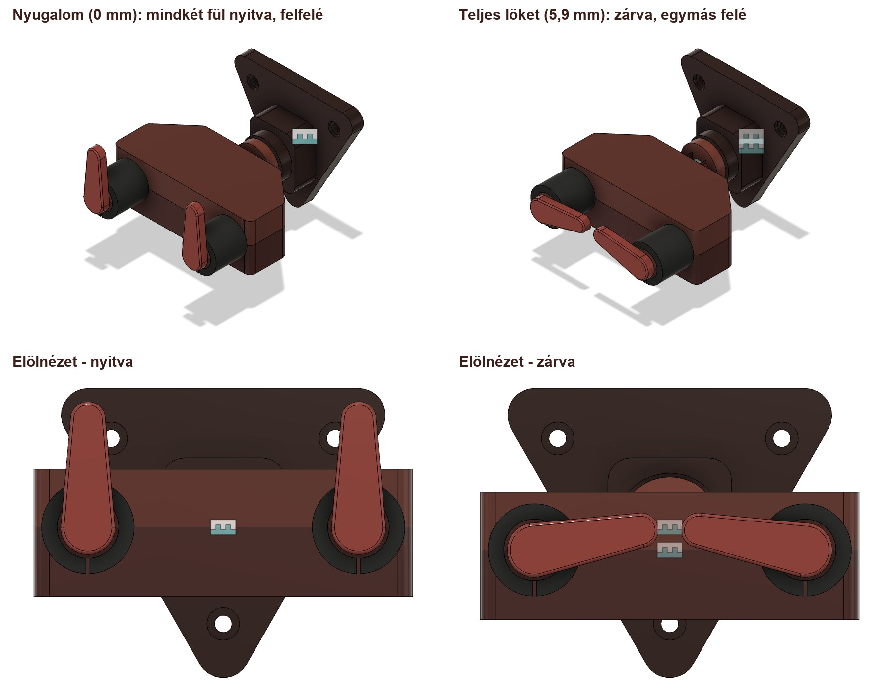

Megtervezni.
Videókból és képekből indulok ki, majd Fusionben megtervezem a saját gitártartómat. Közben kipróbálom, hogyan mozog.
AUTODESK FUSIONSAJÁT ÖTLET. ÚJ ESZKÖZÖK. TÖBB HELY.
Egy menő autolockos gitártartót tervezek.
AI segítséggel — a zsúfolt sarok helyett.

01 / AZ ÖTLET

Otthon egyre több a gitár, és egyre kevesebb a szabad hely. A következő lépés: fel a falra — úgy, hogy a hangszerek biztonságban legyenek, és jól is mutassanak.
Megtaláltam a nekem tetsző autolockos tartót, de drágának érzem ahhoz, hogy egyszerűen megvegyem. Inkább megtanulom, hogyan tervezzek sajátot, az AI segítségével.
02 / A TERVEZÉS MOZGÁSBAN
03 / TANULÁS AI-JAL
Egyetlen projekt.
Három új terület.
Videókból és képekből indulok ki, majd Fusionben megtervezem a saját gitártartómat. Közben kipróbálom, hogyan mozog.
AUTODESK FUSIONEgy rövid videóban mesélem el, hogyan jutok el az ötlettől a kész modellig.
KÉPERNYŐFELVÉTEL + VÁGÁSEzen az oldalon gyűjtöm össze a modellemet, a videómat és azt, amit közben megtanulok.
WEBOLDAL + PROJEKTNAPLÓ04 / ÍGY MŰKÖDIK
Ráteszed a gitárt: a ház 5,9 mm-t lesüllyed, és a két fül együtt bezár. Ha leveszed, a rugó visszanyomja, és a fülek kinyitnak. A valódi prototípus működését és terhelhetőségét még kipróbálom.
Mutasd a lépéseket és a STEP-et ↗05 / A MUNKA AZ AI-JAL
Videókból és terméklinkekből indultam ki. Ezek alapján lépésről lépésre értettem meg a szerkezetet, majd az AI segítségével szerkeszthető Fusion-modellt építettem.
A tervezés folyamata ↗„Segíts nekem Fusionben modellezni egy ilyen gitártartót. A modellt új fülön szeretném felépíteni.”
Az elképzelésemet ezután terméklinkkel és egy újabb videóval pontosítottam. A részletes prompttörténetet és a tanulságokat itt bővítem majd tovább.
VIDEÓ → REFERENCIA → MODELL → ELLENŐRZÉSPRODUCT TEAM / MŰHELYNAPLÓ
Hogyan jutok el egy hétköznapi problémától a saját 3D modellemig?
Referenciák, döntések, próbálkozások és tanulságok.

A STEP-fájlok és a tervezési riport letölthetők a Mellékletek fülön ↗
A gitároknak új helyet keresek. Egy falra szerelhető, automatikusan záródó tartó saját változatát szeretném megtervezni. A forma megértéséhez egy Hercules GSP39WB Plus terméklinket és két bemutatóvideót használtam referenciaként.
A fali konzolt, a csúszóvillát és a zárómechanikát külön alkatrészekből építettem fel Fusionben. A hat nyomtatandó elem és a vásárolt alkatrészek listáját a Mellékletek fülön gyűjtöttem össze.
A zárófülek szemléltető mozgását kipróbáltam. A méretek egy részét fotókról becsültem, ezért a modellemet továbbra is ellenőrzést igénylő prototípusként kezelem.

A belső mechanika kidolgozása. A Fusion-modell első változatából kimaradt a belső mechanika. Ezt az AI nem ismerte fel magától: külön rá kellett vezetnem, hogy ezt a részt is dolgozza ki.
A vázlat túlkényszerezése.
Az ismételt koordinátaméretekre a Fusion vázlatmegoldója túlkényszerezést jelzett. Az azonos koordinátákhoz közös geometriai kényszereket használtam; a megoldást külön ideiglenes vázlaton ellenőriztem.
A ház profiljánál a vázlatsík irányát is korrigáltam. A javítás után külön ellenőriztem a mozgást és a paraméterek módosíthatóságát.
Hibás fülpálya. A zárófülek pályája rosszul volt kényszerezve. A fülek mozgását a terhelési lökethez kötött csap–horony kényszer vezérli. A hibás beállítás miatt a két fül nem együtt, tükörszimmetrikusan mozdult: az egyik oldalra kifordult, a másik szinte függőleges maradt.

A megoldás. A csap–horony kényszernek két megoldása volt, ezért a fülek egymástól függetlenül átbillenhettek. A P02 vezérlőhornyait lezártam és meghosszabbítottam, így a csap csak a jó ágban fér el, a rossz ágban fizikailag beleütközik a P02-be. A CAD-ben a csap csúszására határokat is tettem. Most a két fül mindig együtt mozog: nyugalomban felfelé állnak, teljes löketnél 80°-ot fordulnak, és egymás felé zárnak. Két zsákutcát visszavontam: a horony vázlatának átírása eltorzította a P02-t, a csuklók szöghatára pedig beragasztotta a mechanizmust.

A rugó átszúrta a fedőt. A rugó a belső vezetékhez volt rögzítve, ezért teljes löketnél 5,9 mm-t belement a felső fedőbe. A fedőhöz rögzítettem, a fedő vezetőcsonkját Ø9,1 mm-re bővítettem (új paraméter: rugo_csonk). A teljes löket alatt most nincs ütközés.
Elfordulhatott a tartó. Az „Auto Swivel” ±12°-os forgócsukló elfordulni engedte a tartót a fali konzolhoz képest. Merev kötésre cseréltem: a ház most csak függőlegesen mozog 0 és 5,9 mm között, nem forog. A nyomtatott darabra még kell egy geometriai forgásgátló.
Véglegesítem a STEP-modellemet, elkészítem a tervezést bemutató videómat, és részletes promptnaplóba gyűjtöm a tapasztalataimat. A leadási anyagomat a projekt haladásával töltöm fel.
A prototípusomat szeretném kézbe is venni: az a célom, hogy Tomi 3D nyomtatással elkészíthesse. Ezért az alkatrészeket a nyomtathatóság szempontjait figyelembe véve terveztem át, hogy a digitális modellből fizikai prototípus is készülhessen.
Megmértem, mennyi időbe telt a projekt. Az aktív idő a saját kérdéseim, döntéseim és ellenőrzéseim ideje. A passzív időben az AI önállóan modellezett, exportált, renderelt vagy kódot írt, én pedig közben mással foglalkoztam.
| Szakasz | Aktív | Passzív | Összesen |
|---|---|---|---|
| Honlap felépítése és modellezés (nov. 2.) | 0:40 | 3:20 | 4:00 |
| Fusion MCP-csatlakozó beállítása | 0:15 | 0:05 | 0:20 |
| AGS v3 modell, PETG, bordó színek, ábra, BOM | 0:12 | 0:32 | 0:44 |
| Videó tervezése és renderelése | 0:08 | 0:24 | 0:32 |
| Modelljavítások: rugó, rögzítés, fülpálya | 0:08 | 0:25 | 0:33 |
Már az első napon is ez volt a minta: a 4 órás honlap- és modellezési munkából mindössze 40 perc volt aktív, 3 óra 20 perc passzív. A részleteket a Mellékletek fülön lévő projektriport tartalmazza.
Visszanéztem a teljes folyamatot: hol vesztettem időt, és mitől lett volna gördülékenyebb a munka. A legfontosabb tanulság: minél jobban előkészítem a terepet, annál többet dolgozhat helyettem önállóan az AI.
Mit tartanék meg? A felosztást: én döntök, az AI végrehajt, a végeredményt én ellenőrzöm. Így lett a munka 78%-a passzív.
A darabjegyzék, a robbantott ábra, a nyomtatható STEP-fájlok és a tervezési riport egy helyen.
Tovább a mellékletekhez ↗02 / ÍGY ÁLL ÖSSZE